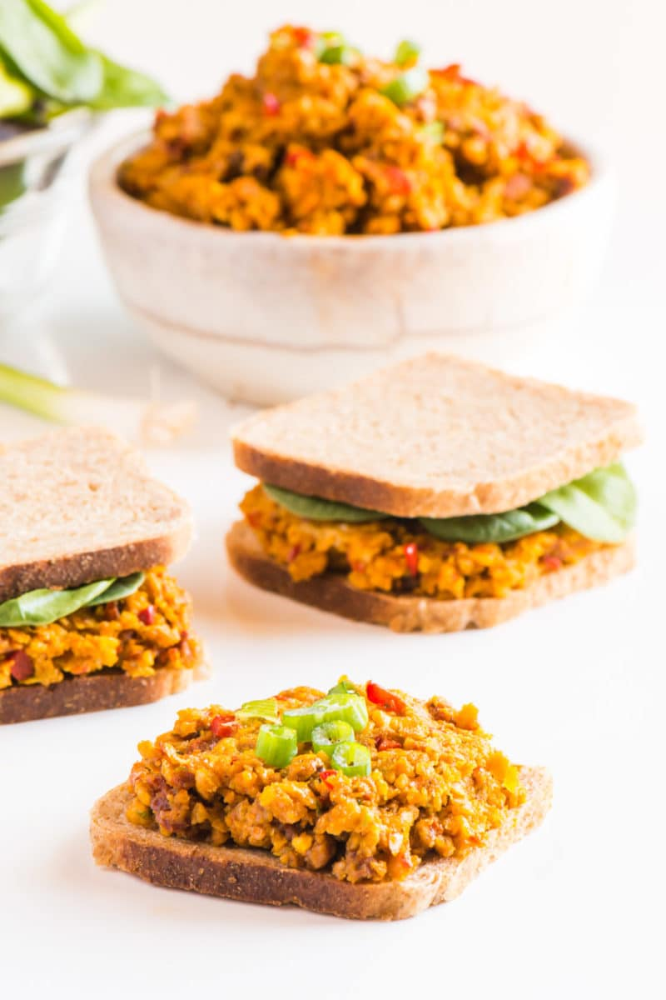

Deviled Vegan Ham Salad

Image of Deviled Vegan Ham Salad
Ingredients
- 1 cup Spicy Roasted Chickpeas
- 1/4 Sun-dried Tomatoes*
- 4-6 T vegan mayo
- 1 green onion finely chopped
- 1 tsp mustard
- 1/4 tsp garlic powder
- 1 tsp liquid smoke
- 1 red chili pepper stemmed, seeds removed, chopped**
- Optional: 1 T sriracha sauce
Steps
-
Combine the roasted chickpeas and sundried tomatoes in a food
processor. Pulse until this mixture is broken down into small bits.
-
Add the vegan mayo, chopped green onion, mustard, garlic powder, and
liquid smoke. Pulse until combined.
-
You can serve this immediately on a bun or even open-faced sandwich.
Notes
* Sun-dried tomatoes come in many varieties. You can use sun-dried
tomatoes packed in oil, just chop them up a little before adding them to
the food processor. I prefer to buy soft sun-dried tomatoes in a
package. Just be aware, some packages of sun-dried tomatoes are hard and
dry. If that’s the kind you have, you’ll need to soften them up in some
hot water before adding them to this recipe. Follow the instructions on
the back of the bag.
** If adding the red chili pepper sounds a little too spicy for your
taste, sub with 1/4 cup red bell pepper, chopped